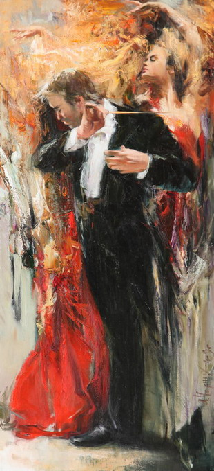

магический портрет
Стиль и дух Петербурга – в чем он? Во всем – в линиях рек и изгибах фонарей, величественности храмов и притягательности разводных мостов, в звуках музыки и штрихах картин. Кстати о картинах….
Портреты великих без преувеличения людей пишут в Петербурге много и часто, но не всем и далеко не всегда удается передать именно тот петербургский дух, которым проникнут каждый петербуржец. И вдруг совершенно неожиданным для себя образом я встречаю портрет, который завораживает своей энергетикой, сгустком эмоций и истинно петербуржской аурой. На портрете Валерий Гергиев. Работа принадлежит кисти художника Анатолия Черных...
Портреты великих без преувеличения людей пишут в Петербурге много и часто, но не всем и далеко не всегда удается передать именно тот петербургский дух, которым проникнут каждый петербуржец. И вдруг совершенно неожиданным для себя образом я встречаю портрет, который завораживает своей энергетикой, сгустком эмоций и истинно петербуржской аурой. На портрете Валерий Гергиев. Работа принадлежит кисти художника Анатолия Черных...
...
портрет современника
В начале года, когда я был в гостях у Анатолия Черных (об этом петербургском художнике мы писали во втором выпуске «Консула» за этот год), он высказал мысль, с которой трудно не согласиться: надо писать портреты великих россиян, петербуржцев при их жизни. Поклониться, поблагодарить таким образом людей, много сделавших для страны и нашего города. Время идет, и мы не знаем, кто займет их место и что эти вновь пришедшие смогут сделать для нас. Иногда кажется, что таких, к которым следует прислушиваться, подражать им — таких сегодня почти нет…
...
Певец и время Владимир Высоцкий (серия офортов)
"Высоцкого я знал лично. Меня эта работа затронула. Высоцкий стал знаменем эпохи. Эта серия очень интересная, очень точно передан характер пэтики. Все, что здесь представлено автором - это Высоцкий." Вице-президент Академии художеств СССР, академик Д.С. Бисти.
...
© Анатолий Черных персональный сайт